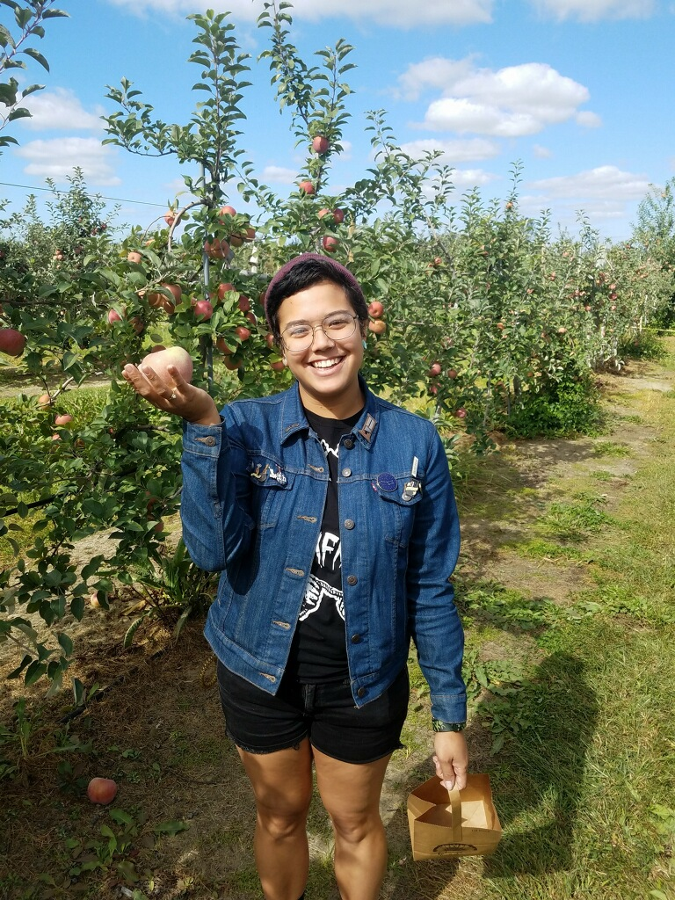
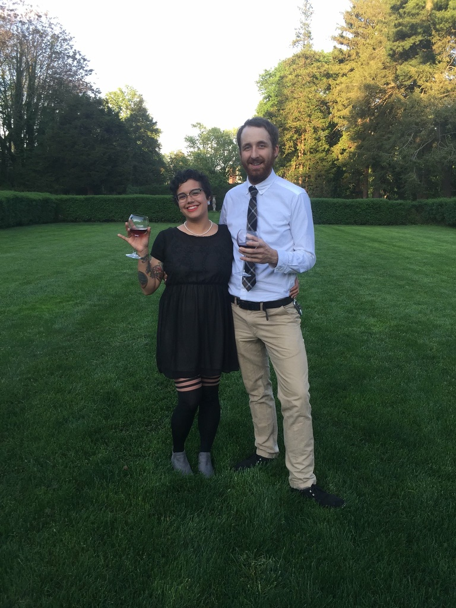
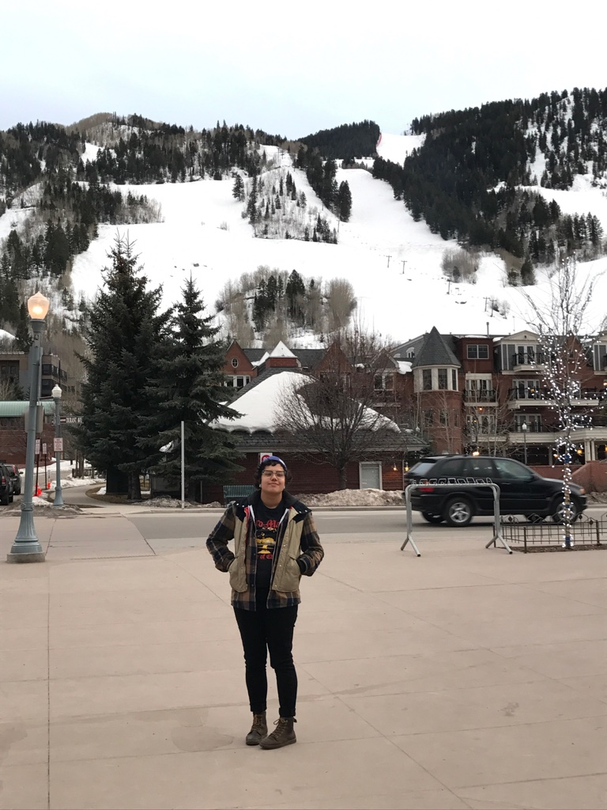
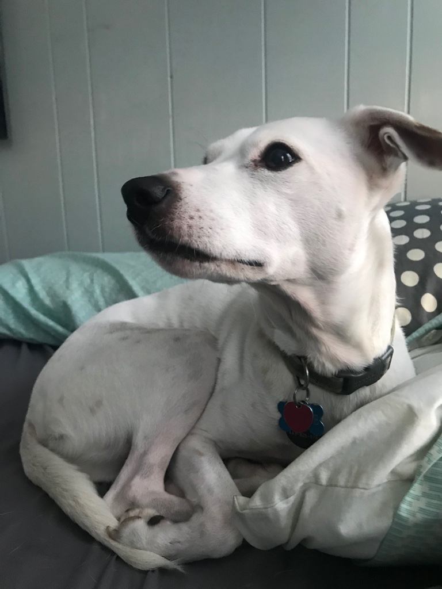
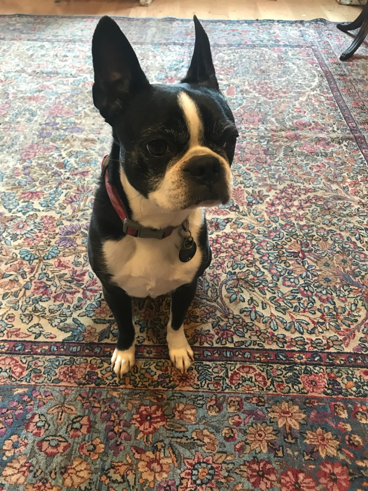
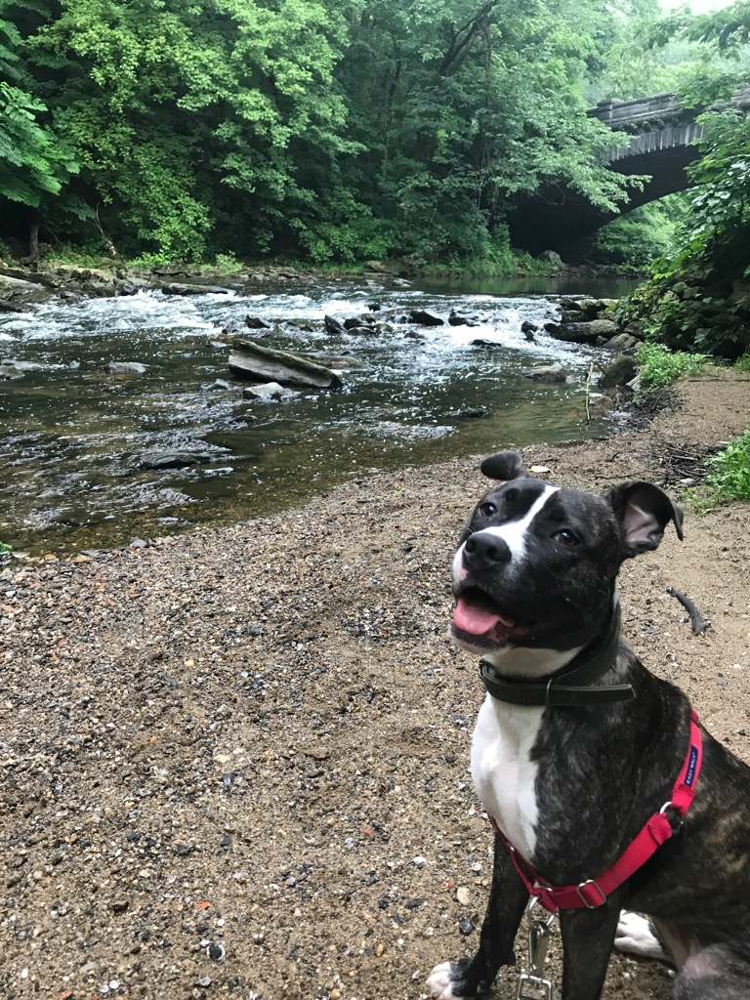

About Me
| Lori N. Aparentado | 29 | Baltimore, MD -> Philadelphia, PA |
I've been in Philadelphia for roughly 5 years, living in Fishtown with my boyfriend (Rob) and our three dogs (George, Katie, and Jupiter.) For the past 5 years I've been working in coffee. I started as a barista and eventually progressed to management and wholesale. I love the organization and human interaction involved in management.
I'm half filipino. I have three brothers (I'm the oldest.) I like reading, crossword puzzles, dogs, horror movies, karaoke night, traveling, bloody marys, and thrifting. I'm an aries and I have the big ram's head tattooed on my stomach to prove it. I've seen every episode of the Golden Girls multiple times. I hate milk but I love ice cream, cheese, and butter. I love the moon.





